Como transformar o desejo de sair de casa em ação, reduzindo a carga mental de ter que escolher um lazer.
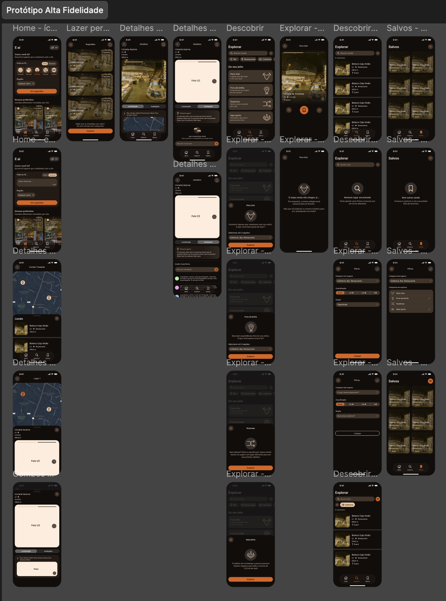
Tudo começou com uma pergunta: o que realmente impede as pessoas de sair de casa para viver novas experiências?
Antes de pensar em uma solução, decidimos investigar esse comportamento. Sabíamos que existia uma intenção genuína de explorar a cidade e participar de novas experiências, mas ainda não entendíamos quais fatores impediam que esse desejo se transformasse em ação.
Esse foi o desafio que guiou todo o projeto: Como reduzir o atrito entre o desejo e a ação de sair?
Conduzi a fase de descoberta reunindo benchmarking, entrevistas e síntese dos principais aprendizados em um único espaço colaborativo. A pesquisa revelou um padrão interessante: ficar em casa gera ainda mais vontade de permanecer em casa e as redes sociais despertam o desejo, mas raramente ajudam de fato a decidir.
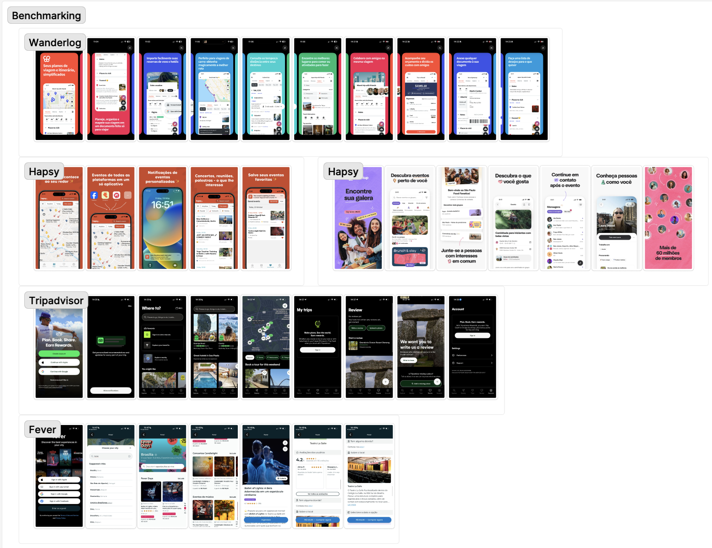
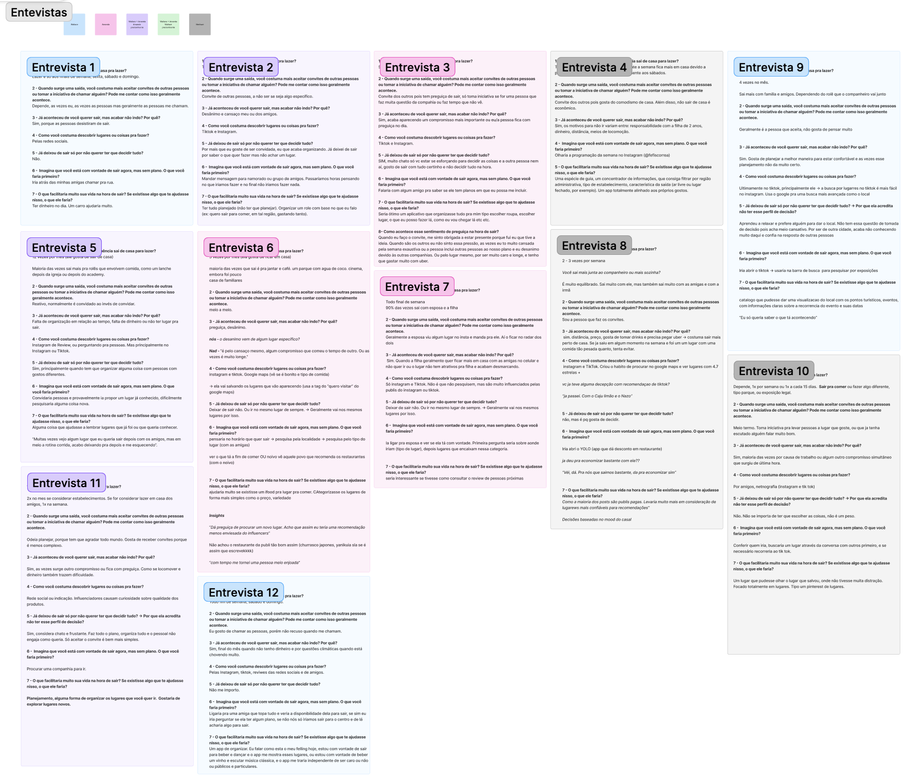
Ao aprofundar as entrevistas, foi encontrado que o problema não era a falta de opções, mas a dificuldade de escolher com confiança em meio a tantas possibilidades. Quanto maior a oferta, maior a insegurança de tomar a decisão "errada", o que fazia muitas pessoas adiarem a escolha ou simplesmente desistirem de sair.
Os insights mais importantes surgiram da investigação desse comportamento. Ficou claro que situação e emoção influenciam muito mais a decisão do que simplesmente listar lugares disponíveis. Essa compreensão redefiniu o problema e direcionou todo o restante do projeto.
Transformei os padrões encontrados na pesquisa em duas personas que representavam motivações e comportamentos singulares. Mais do que perfis fictícios, elas serviram como referência para discutir prioridades e manter as decisões de design conectadas às necessidades reais identificadas durante a descoberta.
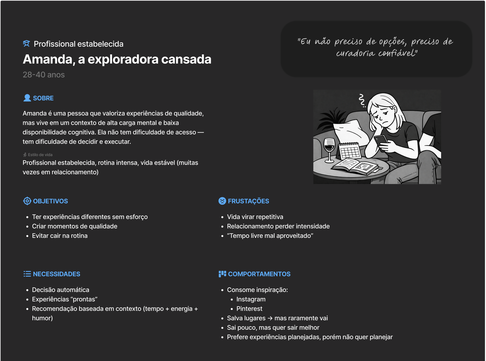
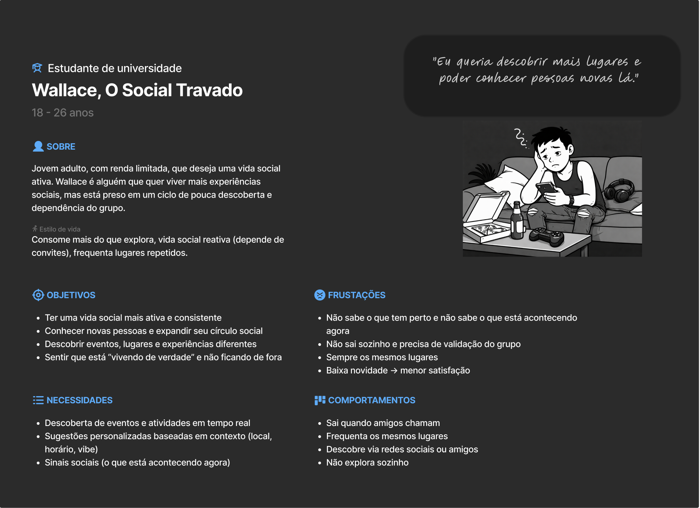
Mapeei a jornada do usuário para identificar onde surgiam as principais frustrações e oportunidades. A partir disso, priorizei as funcionalidades essenciais para a primeira versão, buscando resolver bem um problema central antes de expandir o escopo do produto.
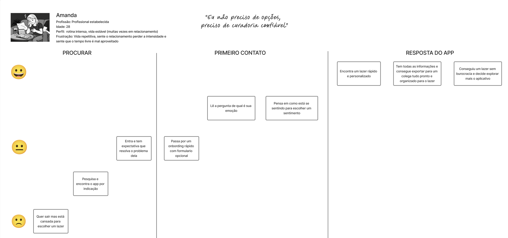
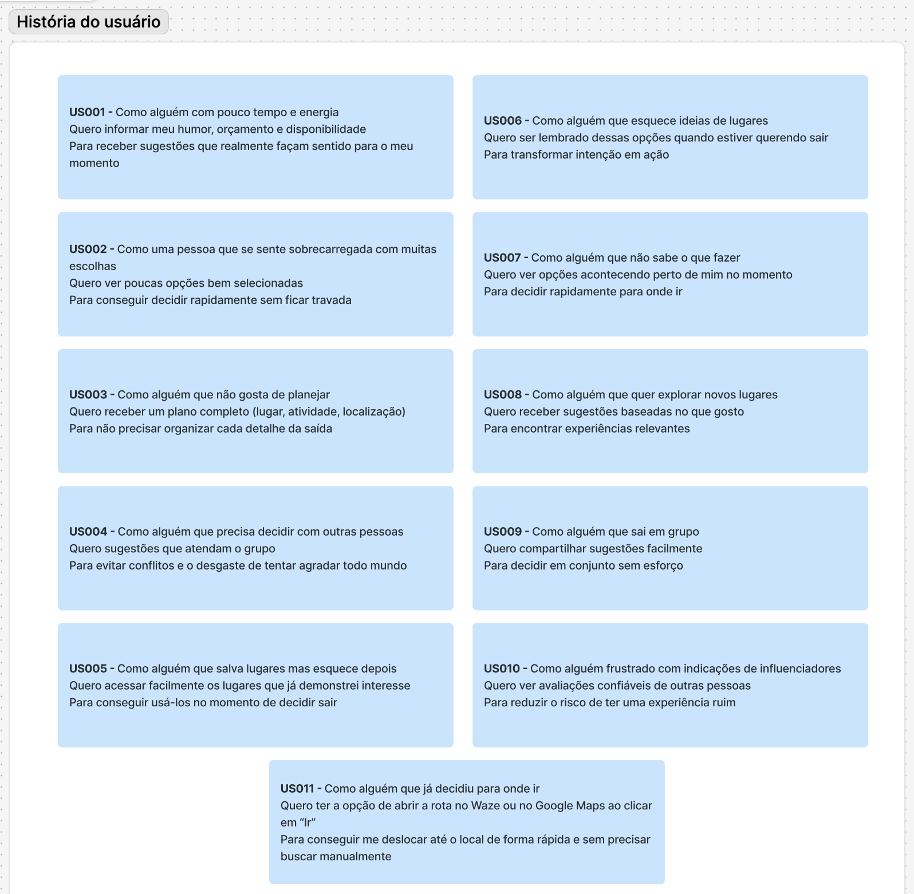
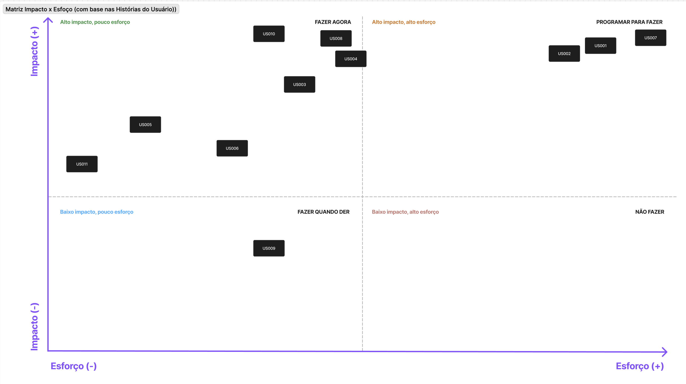
O foco escolhido foi um aplicativo que recomenda experiências de acordo com o contexto e humor do usuário, reduzindo a responsabilidade de ponderar e pesquisar lugares estando muitas vezes cansados da rotina de trabalho, na qual já é repleta de decisões.
Antes de desenhar as telas, estruturei a base visual do produto no Figma, definindo componentes, estilos e padrões que garantissem consistência ao longo do projeto. Essa organização tornou a evolução das interfaces mais rápida e facilitou a colaboração com o desenvolvimento.
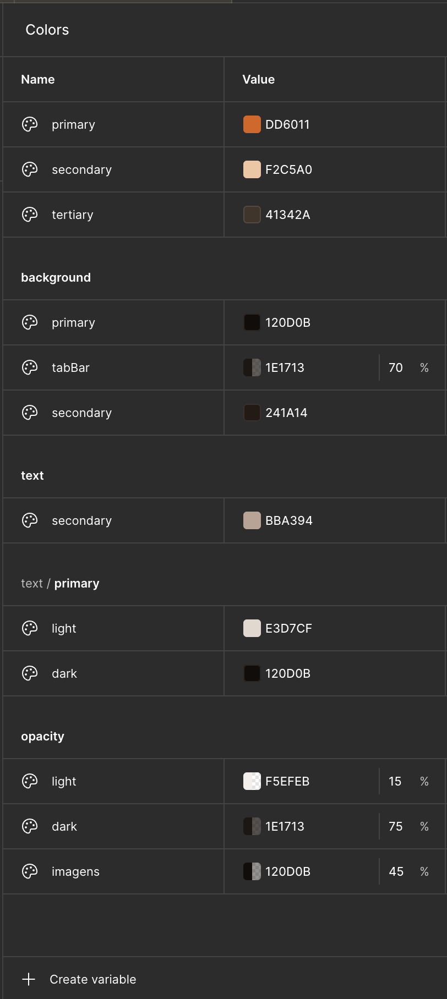
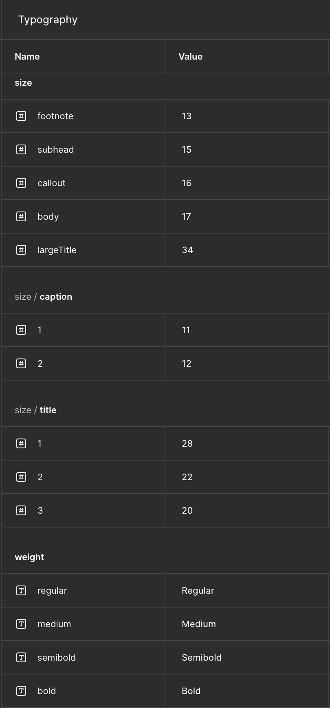
Comecei validando os fluxos em média fidelidade, deixando a maioria das decisões visuais para a próxima etapa. Com os principais caminhos definidos, evoluí para a alta fidelidade refinando conteúdo, microinterações e pequenos detalhes que tornaram a experiência mais clara e natural.
Média fidelidade · estrutura e fluxo
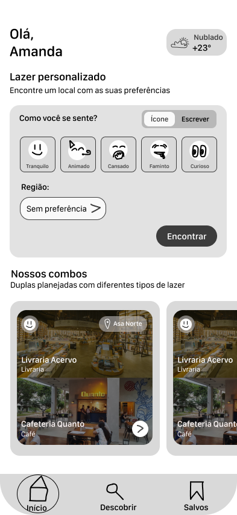
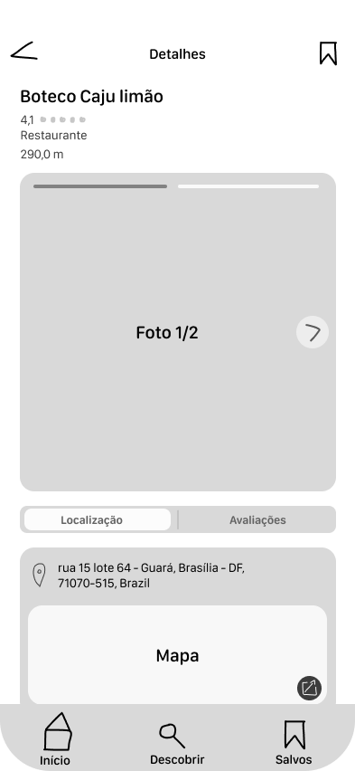
Alta fidelidade · interface final
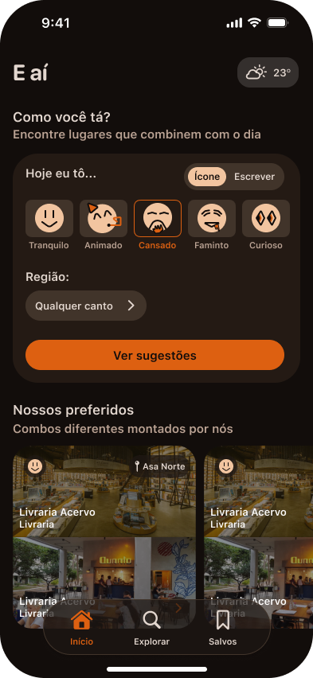
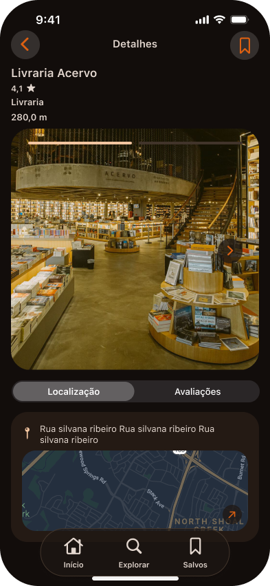
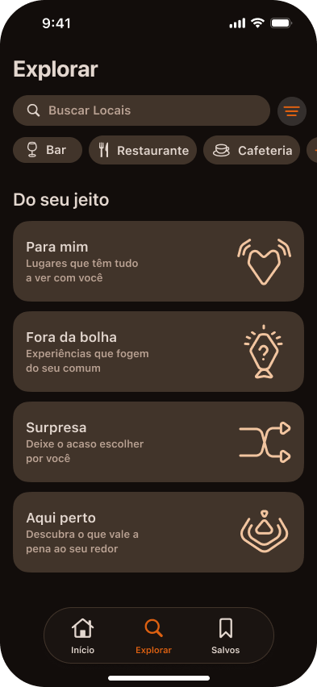
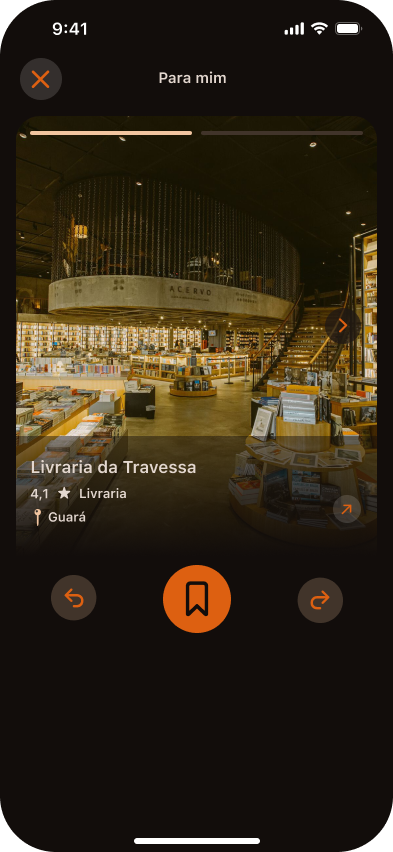
O resultado foi um aplicativo publicado na App Store que transformou os aprendizados da pesquisa em uma experiência centrada no contexto do usuário. Mais do que chegar a uma interface final, este projeto reforçou a importância de construir soluções a partir de evidências, validar decisões continuamente e manter o problema como guia durante todo o processo de design.
Este projeto mudou a forma como enxergo pesquisa. Antes, eu buscava respostas para validar ideias. Hoje, uso a descoberta para questionar minhas próprias suposições e deixar que os aprendizados direcionem as decisões de produto.